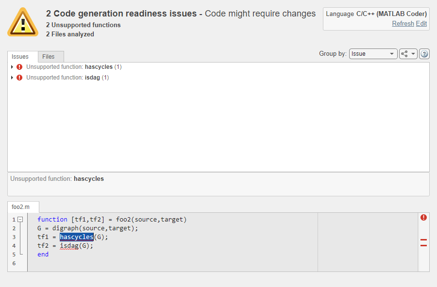
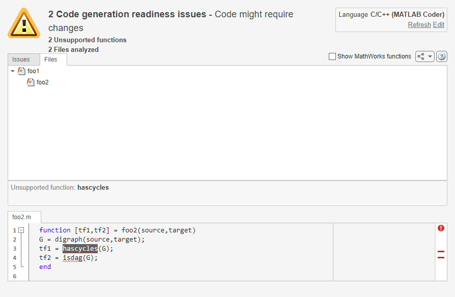

Code Generation Readiness Tool
The code generation readiness tool screens MATLAB® code for features and functions that code generation does not support. The tool provides a report that lists the source files that contain unsupported features and functions. It is possible that the tool does not detect all code generation issues. Under certain circumstances, it is possible that the tool can report false errors. Therefore, before you generate code, verify that your code is suitable for code generation by generating a MEX function.
The code generation readiness tool does not report functions that the code generator
automatically treats as extrinsic. Examples of such functions are plot,
disp, and figure
Run the Code Generation Readiness Tool
To run the code generation readiness tool, use one of these methods:
In the MATLAB Coder™ app, load your entry-point function. The code generation tool readiness tool runs automatically.
In the browser, right-click the file that you want to check for code generation readiness and select Check Code Generation Readiness.
At the command line, use the
coder.screener(MATLAB Coder) function.
Issues Tab

On the Issues tab, the tool displays information about:
MATLAB syntax issues. These issues are reported in the MATLAB editor. To learn more about the issues and how to fix them, use the Code Analyzer.
Unsupported MATLAB function calls, language features, and data types.
You can also:
View your MATLAB code inside the code generation readiness tool. When you select an issue, the part of your MATLAB code that caused this issue gets highlighted.
Group the readiness results either by issue or by file.
Select the language that the code generation readiness analysis uses.
Refresh the code generation readiness analysis if you updated your MATLAB code.
Export the analysis report either as plain text file or as a
coder.ScreenerInfoobject in the base workspace.
Files Tab

If the code that you are checking calls functions in other MATLAB code files, the Files tab shows the call dependency between these files. If you select Show MathWorks Functions, the report also lists the MathWorks® functions that your function calls.
Limitations of the Code Generation Readiness Tool
The code generation readiness tool can be more likely to return incorrect results for functions under these circumstances:
Multiple functions in the current scope have the same name. See Function Precedence Order.
The function is overloaded. See Overload Functions in Class Definitions.
To determine which function definition the code generation readiness tool assessed, click on the function name on the Files tab.
See Also
coder.screener (MATLAB Coder) | coder.ScreenerInfo Properties (MATLAB Coder)
Topics
- Identify Entry-Point Functions and Check MATLAB Code (MATLAB Coder)
- MATLAB Language Features Supported for C/C++ Code Generation (MATLAB Coder)
- Functions and Objects Supported for C/C++ Code Generation (MATLAB Coder)